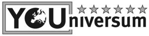

Trade Mark Journal No.2025/014 4 April 2025
WO0000001831557 (5,29,30,32,35,41,44)
Office of origin: Germany
Date of International Registration:15 July 2024
Date of designation in the UK:
15 July 2024

International priority date claimed: 16 January 2024
(Germany)
- Class 5
- Dietary supplements and dietetic preparations; dietary supplements for human beings; dietary and nutritional supplements; nutraceuticals for use as a dietary supplement; protein dietary supplements; food supplements consisting of amino acids; mineral dietary supplements; linseed dietary supplements; food supplements for non-medical purposes; wheat dietary supplements; dietary supplemental drinks; vitamin preparations; meal replacement powders; powdered fruit-flavored dietary supplement drink mix; powdered nutritional supplement drink mix; vitamin drinks; medicated isotonic drinks; propolis dietary supplements; lecithin dietary supplements; albumin dietary supplements; pollen dietary supplements; enzyme dietary supplements; casein dietary supplements; yeast dietary supplements; alginate dietary supplements; royal jelly dietary supplements; glucose dietary supplements; anti-oxidant food supplements; mineral nutritional supplements; health food supplements made principally of minerals; dietary supplements consisting of vitamins.
- Class 29
- Edible oils and fats; dairy products and dairy substitutes; whey; drinks made from dairy products; milk products; milk substitutes; milk shakes; flavoured milk powder for making drinks; white of eggs; albumen for food; oils for food; seaweed extracts for food; soups and stocks, meat extracts; dietetic foods for non-medical purposes based on fats, fatty acids, with the addition of vitamins, minerals, trace elements; dietetic foods for non-medical purposes based on proteins, with the addition of vitamins, minerals, trace elements; dietetic foods not for medical purposes based on proteins.
- Class 30
- Processed grains, starches, and goods made thereof for the sports and fitness sector; cereal bars and energy bars; high-protein cereal bars; oat bars; dietetic foods for non-medical purposes based on carbohydrates, fibre, with the addition of vitamins, minerals, trace elements; flavourings for beverages; syrups and treacles.
- Class 32
- Non-alcoholic beverages; whey beverages; protein drinks; protein-enriched sports beverages; beer; brewery products; non-alcoholic beer; shandy; flavoured carbonated beverages; juices; fruit squashes; fruit juice beverages; fruit flavored soft drinks; vegetable juices [beverages]; waters; coconut water as a beverage; carbonated mineral water; flavoured waters; isotonic beverages; non-alcoholic preparations for making beverages.
- Class 35
- Retail and wholesale services, including via the internet, relating to dietary supplements and dietetic preparations, dietary supplements for human beings, dietary and nutritional supplements, nutraceuticals for use as a dietary supplement, protein dietary supplements, food supplements consisting of amino acids, mineral dietary supplements, linseed dietary supplements, food supplements for nonmedical purposes, wheat dietary supplements, dietary supplemental drinks, vitamin preparations, meal replacement powders, powdered fruit-flavored dietary supplement drink mix, powdered nutritional supplement drink mix, vitamin drinks, medicated isotonic drinks, propolis dietary supplements, lecithin dietary supplements, albumin dietary supplements, pollen dietary supplements, enzyme dietary supplements, casein dietary supplements, yeast dietary supplements, alginate dietary supplements, royal jelly dietary supplements, glucose dietary supplements, anti- oxidant food supplements, mineral nutritional supplements, health food supplements made principally of minerals, dietary supplements consisting of vitamins; retail and wholesale services, including via the internet, relating to edible oils and fats, dairy products and dairy substitutes, whey, drinks made from dairy products, milk products, milk substitutes, milk shakes, flavoured milk powder for making drinks, albumen for culinary purposes, albumen for food, oils for food, seaweed extracts for food, soups and stocks, meat extracts, dietetic foods for non- medical purposes based on fats, fatty acids, with the addition of vitamins, minerals, trace elements, dietetic foods for non-medical purposes based on proteins, with the addition of vitamins, minerals, trace elements, dietetic foods not for medical purposes based on proteins; retail and wholesale services, including via the internet, relating to processed grains, starches, and goods made thereof for the sports and fitness sector, cereal bars and energy bars, high-protein cereal bars, oat bars, dietetic foods for non-medical purposes based on carbohydrates, fibre, with the addition of vitamins, minerals, trace elements, flavourings for beverages, syrups and treacles; retail and wholesale services, including via the internet, relating to non-alcoholic beverages, whey beverages, protein drinks, protein- enriched sports beverages, beer, non alcoholic beer, shandy, flavoured carbonated beverages, juices, fruit squashes, fruit juice beverages, fruit flavored soft drinks, vegetable juices [beverages], waters, coconut water as a beverage, carbonated mineral water, flavoured waters, isotonic beverages, non-alcoholic preparations for making beverages; advertising, marketing and promotional services; business assistance, management and administrative services; business consultancy and advisory services; business analysis, research and information services; collection and systematization of business data; advisory services in the organisation and management of fitness studios.
- Class 41
- Education, entertainment and sport services; organisation of conferences, exhibitions and competitions; sports and fitness services; exercise [fitness] training services; education services relating to nutrition; rental of sports or exercise equipment; entertainment services relating to sport; sports coaching; providing facilities for sports recreation; operation of fitness studios, namely sports activities in the fitness sector and advice, courses and seminars in the fitness sector; fitness club services; conducting fitness classes; provision of educational services relating to exercise; provision of training courses; training services relating to fitness; consultancy services relating to training; sporting and recreational activities; provision and management of sporting events; organising of sporting activities and of sporting competitions; presentation of live performances; physical fitness consultation; provision of educational health and fitness information; provision of information relating to physical training via an online web site; provision of information relating to sports; provision of instruction relating to nutrition; publishing, reporting, and writing of texts; publication and editing of books, newspapers and magazines [except for advertising purposes]; provision of online tutorials; publication of multimedia material online; consultancy and information in relation to the aforesaid services, included in this class.
- Class 44
- Human healthcare services; fitness testing; nutrition counseling; dietary and nutritional advice; services rendered by a dietician; human hygiene and beauty care; sauna services.
Vassilios Delis
Representative: Altmann Stößel Dick Patentanwälte PartG mbB, Theodor-Heuss-Anlage 2 , 68165 Mannheim, GERMANY